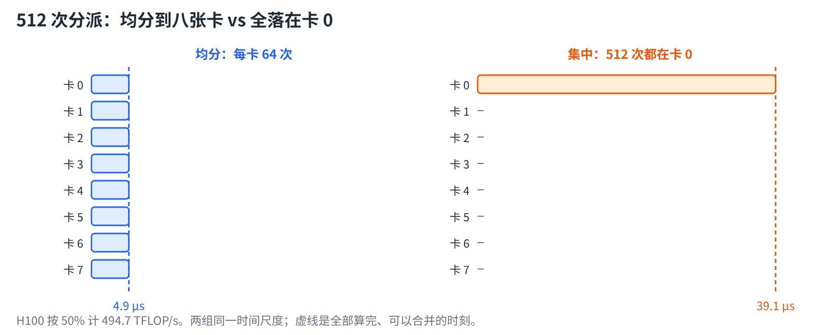
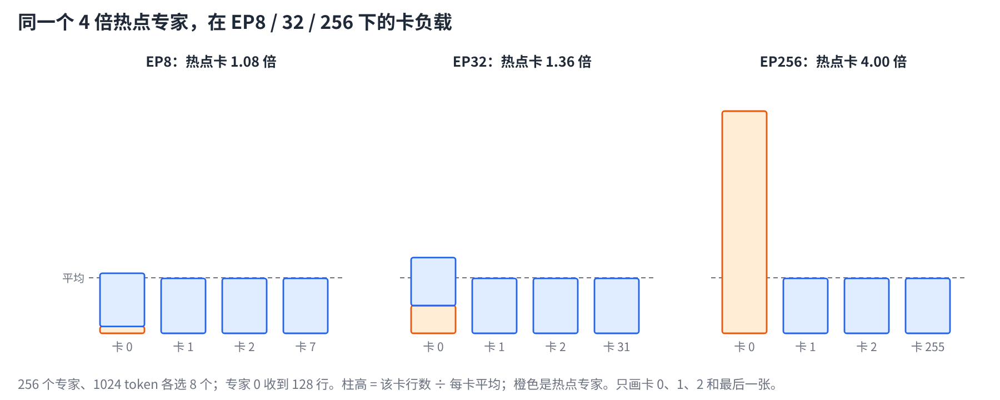
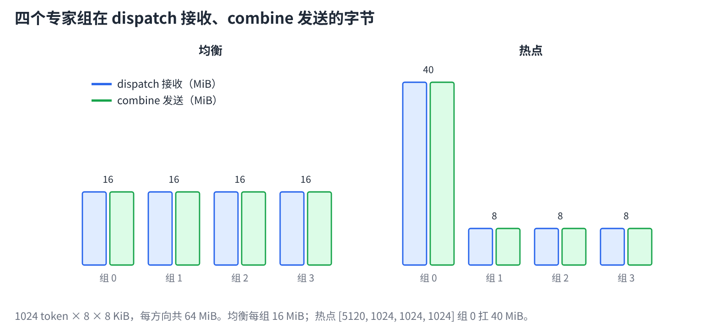
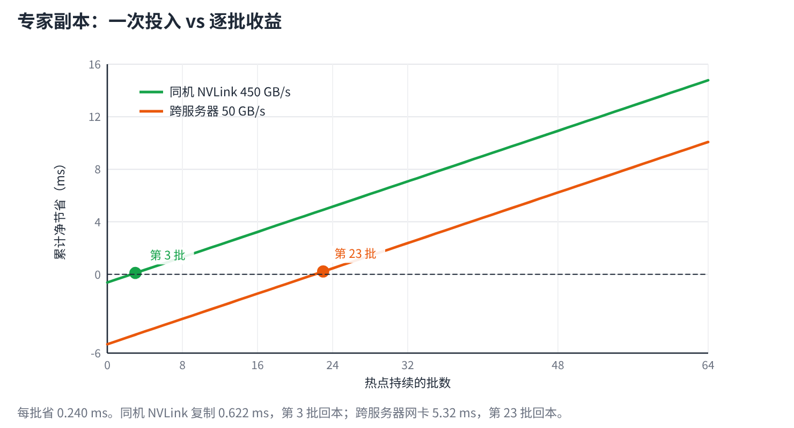
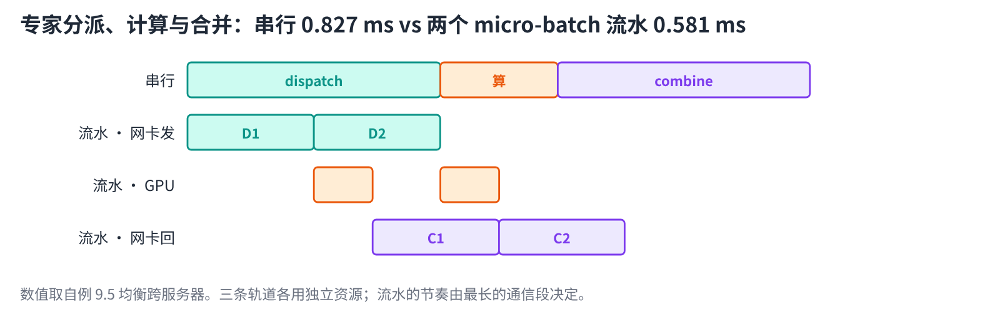
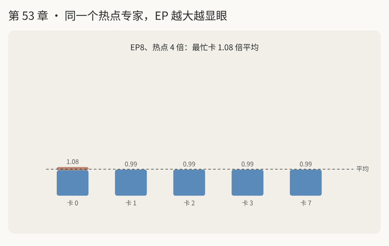

第 53 章 · 专家放置、复制与负载均衡：最忙的那张卡定完成时刻
本地运行
git clone https://github.com/wikieden/ai-infra-from-constraints
cd ai-infra-from-constraints/code/notebooks
pip install jupyterlab torch numpy
jupyter lab ch53_expert_balance.ipynb也可以下载后直接用 VS Code 打开 .ipynb 运行。需要 GPU 的章节在 Colab 里选「代码执行程序 → 更改运行时类型 → GPU」。
本章回答：总计算量一样，八个热点专家挤在一张卡上为什么慢 8 倍？同一个 4 倍热点专家，在 EP8 里只多 8%，在 EP256 里却是 4 倍，为什么？两台 HGX H100 之间的 dispatch / combine 下界怎么算，热点、单链路、FP8、NVLink 各改了哪一项？热点专家复制一份，要几批才回本？Grouped GEMM 的补齐和通信与计算的争用，怎样吃掉 MFU？
讲解日期：2026-11-24 · 上一章：第 52 章 Attention–FFN 分离与异构执行 · 下一章：第 54 章 KV 的分布、共享与请求路由
对应原文：materials/ai-infra-book/manuscripts/09-分布式推理.md§9.4 L348–L492（例 9.5、9.6，图 9-19 至 9-27）
本章缩写：EP = Expert Parallelism（专家 / 并行）· EPLB = Expert Parallelism Load Balancer（专家 / 并行 / 负载 / 均衡器）· GEMM = General Matrix Multiply（通用 / 矩阵 / 乘法）· HGX（NVIDIA 的八卡 GPU 服务器基板）· DMA = Direct Memory Access（直接 / 内存 / 访问）· skew（倾斜：各卡负载不均）。全部缩写见 缩写与术语表
讲解
第一步：最忙的卡说了算（2026-11-24）
类比：小组作业。 八个人分工，交作业时间看最后一个交的人。工作量全压在一个人身上，其他人再闲也帮不上。
原文 L350–L366：卡 \(r\) 的完成时间至少 \(\max(F_r/C_r, W_r/B_r)\)，合并要等最慢的卡。
512 次分派放到八张 H100（按 50% 计 494.7 TFLOP/s）：
- 均分：每卡 64 次、2.42 GFLOPs，4.9 μs；
- 八个热点专家全在卡 0：19.3 GFLOPs，39.1 μs，8 倍。

图 53-1 · 两图同一时间尺度。集中把读取从 4.5 GiB 降到 288 MiB，却把最忙卡的计算量放大 8 倍。
均衡策略先找瓶颈：读取受限时集中有利（复用），计算受限时分散有利。
一句话：合并按最长的那条横条计时，不按平均。
第二步：EP 越大，skew 越大（2026-11-24）
类比：一个特别能吃的人。 八个人一桌，他多吃的被其他人冲淡；一人一桌，他那桌就是别人的 4 倍。
原文 L368–L380：\(n = 1024\)、\(k = 8\)、\(E = 256\)（DeepSeek-V3 也是 256 个路由专家、选 8 个），共 8192 次分派，平均每专家 32 行。专家 0 收到 128 行（4 倍），其余 255 个各约 31.6 行。
| EP | 每卡专家数 | 热点卡行数 | 每卡平均 | 倍数 |
|---|---|---|---|---|
| 8 | 32 | 1108 | 1024 | 1.08 |
| 32 | 8 | 349 | 256 | 1.36 |
| 256 | 1 | 128 | 32 | 4.00 |

图 53-2 · 橙色段是热点专家。小 EP 里被同卡其他专家冲淡，大 EP 里独占一张卡。
- 没有热点也一样：均匀随机路由模拟 1000 批，EP8 最忙卡只比平均多 4%，EP256 多 52%。卡越多，越容易出一张特别忙的卡。
- 一张卡的行数同时决定 dispatch 接收字节、combine 发送字节、计算时间。EP8 → EP256 每卡平均行数缩到 1/32，最忙卡只降到 1/8.7；EP256 里一张平均的卡有四分之三时间在等。
- DeepSeek 公开的 decode 部署用 EP144、每卡 2 个路由专家，另加 32 个冗余专家按负载调整，正是下一步的手段。
一句话：EP 越大，每卡能互相抵消的专家越少，要等的卡却越多。
第三步：例 9.5，两次交换的下界（2026-11-24）
类比：快递分拣中心。 总包裹数一样，全寄到一个收件人那里，他家门口就排长队；送和收两趟都堵在他那儿。
原文 L382–L422：\(a_{ij}\) 是来源 \(i\) 发给专家组 \(j\) 的分派次数，每份输入 / 输出 \(d_D\)、\(d_C\) 字节：
两台 HGX H100：A 的四张卡做注意力，B 的四张卡各持四分之一专家；每卡 ConnectX-7 每方向 50 GB/s，两台之间 200 GB/s。1024 token × 8 × 8 KiB，每方向共 64 MiB。
| 分布与路径 | dispatch | 最忙卡计算 | combine | 屏障总和 |
|---|---|---|---|---|
| 四组均衡，跨服务器 | 0.336 | 0.156 | 0.336 | 0.827 ms |
| 热点 [5120, 1024, 1024, 1024] | 0.839 | 0.391 | 0.839 | 2.068 ms |
| 均衡，两池间只剩一条 400 Gbit/s | 1.342 | 0.156 | 1.342 | 2.841 ms |
| 热点，dispatch 改 FP8 | 0.419 | 0.391 | 0.839 | 1.649 ms |
| 热点，两池同在一台 HGX（NVLink） | 0.093 | 0.391 | 0.093 | 0.577 ms |

图 53-3 · 均衡和热点每方向都是 64 MiB；热点组两个阶段都扛 40 MiB。柱高是字节需求，不是测得的带宽。
- 跨服务器时两次交换占八成：H100 算一份任务约 76 ns，网卡传一份 8 KiB 却要约 164 ns。
- 热点同时拉长收、算、回三段，都是 2.5 倍。
- 只剩一条链路：分散热点也救不了，加专家卡替代不了跨池带宽。
- 只把 dispatch 改 FP8，combine 和计算不跟着缩。
- 同机 NVLink 把交换压到 0.093 ms，热点卡 0.391 ms 的计算成了最长一段：这时该减热点卡的计算，正是专家副本。
一句话：总量相同，热点让接收、计算、返回三段一起变长；先判断哪一段最长再下手。
第四步：专家副本几批回本（2026-11-24）
类比：多开一个窗口。 开窗口要先搬桌子过去（复制权重），之后每批少排一会儿；排队高峰持续得够久才值得。
原文 L424–L451：副本不改 top-k，模型行为不变；改 top-k、丢 token 会改行为，要分开评价。副本占显存：每卡每层多一个 36 MiB 专家，94 层 3.30 GiB；只给最挤的 8 层各加一个，288 MiB。
例 9.6：一批 128 token 都选卡 0 上的八个热点专家（1024 次分派）。复制其中七个到卡 1–7（共 252 MiB）。卡 0 受显存带宽限制，每批读写约 921 MB：0.550 → 0.309 ms，每批省 0.240 ms。
| 复制路径 | \(T_{\mathrm{copy}}\) | 回本批数 | 热点持续 16 批 | 64 批 |
|---|---|---|---|---|
| 同机 NVLink 450 GB/s | 0.622 ms | 3 | +3.2 ms | +14.8 ms |
| 跨服务器网卡 50 GB/s | 5.32 ms | 23 | −1.5 ms | +10.1 ms |

图 53-4 · 接收卡若只有 32 MiB 空间，一份 36 MiB 都放不下，热点持续多久都没用。
- 同机复制几乎不受时间约束，限制在每卡还能腾出多少显存；跨机复制要预测热点还会持续多久，频繁追热点反而亏。
- CRAFT（SGLang、A100 集群、DeepSeek-R1 / Kimi K2）报告按层分配副本，端到端吞吐平均 1.14 倍、最高 1.2 倍。
- 共享专家池里还要控制跨来源排队：稳定至少要 \(\lambda \mathbb{E}[F_j] < C_j\)、\(\lambda \mathbb{E}[V_\ell] < B_\ell\)；迁移旧副本前要排空在途任务。
场景代码：vLLM 打开专家负载均衡（真实参数名；具体字段随版本变化）：
vllm serve deepseek-ai/DeepSeek-V3 --tensor-parallel-size 1 --data-parallel-size 16 \
--enable-expert-parallel --enable-eplb \
--eplb-config '{"num_redundant_experts": 32, "window_size": 1000}'
一句话：副本是一次投入换逐批收益，回本批数 = ⌊复制时间 / 每批节省⌋ + 1。
第五步：补齐、重叠与最慢的分支（2026-11-24）
类比：订包车。 一车 32 座，只来 1 个人也得开一整车；车道和装卸工被别的车占着，车再快也到不了。
原文 L453–L491：
- 补齐：八个本地专家收到 [32, 16, 8, 4, 2, 1, 1, 0] 共 64 行。非空的各补到 32 行要算 224 行，都补到最大值要 256 行，是有效行的 3.5 倍和 4 倍。
- 重叠：均衡分布 0.336 / 0.156 / 0.336 串行 0.827 ms；均分成两个 micro-batch，理想三段流水 = 一个 micro-batch 三段之和 + 一次最长段 = 0.581 ms。节奏由网卡定。
- 争用：网卡 DMA 和 GEMM 抢 HBM，让每个 micro-batch 的 dispatch、combine 各慢 49%，又回到 0.827 ms：通信重叠了，整批没变快。补齐和争用正是 MFU 达不到峰值的两大来源。
- 最慢的分支：一个 token 的合并时刻
两条分支 0.5 和 1.4 ms 返回，就要等到 1.4 ms；把快的降到 0.3 ms 没用。逐 token 推进时没选慢专家的 token 能先走，整批屏障让大家一起等。

图 53-5 · 第一批的 dispatch 填流水、最后一批的 combine 收尾，这两段是流水之外的串行时间。
DeepEP 等专用 EP 通信库把路由、打包、传输和合并放一起实现；比较实现要固定版本、形状、精度和拓扑，分别记录字节数、GEMM 行数、padding 和每段的就绪 / 完成事件。
一句话：硬件算的是补齐后的矩阵；重叠省的时间可能被争用吃回去；一个 token 等它最慢的专家。
动画演示：EP 规模与热点

可交互版：animations/53-expert-balance.html（选择：EP 8 / 16 / 32 / 64 / 128 / 256；滑块：热点倍数 1–8；勾选：给热点加一个副本）。
怎么看：
- 柱子是各张卡的行数（只画卡 0–3 和最后一张），橙色是热点专家（第二步）；
- 虚线是每卡平均，右上角是最忙卡 / 平均；
- 播放：EP8 热点 4 倍（1.08）→ EP32（1.36）→ EP256（4.00）→ 加一个副本（卡 0 降到 2.00，但放副本的卡 1 还有自己的专家，最忙变成它的 2.99）。
练习与作答记录
题 1（第二步）：\(n = 2048\)、\(k = 8\)、\(E = 256\)，专家 0 收到平均值 3 倍的行数。EP16 和 EP128 时热点卡各是平均的几倍？
作答记录：（待作答）
题 2（第三步）：例 9.5 的热点分布，若 combine 也改成 FP8，屏障总和变成多少？此时最长的是哪一段？
作答记录：（待作答）
题 3（第四步）：每批节省 0.15 ms，跨服务器复制 5.32 ms。热点至少持续几批才回本？持续 30 批净省或净亏多少？
作答记录：（待作答）
口诀
小组作业看最后一个交的人；
能吃的人一人一桌，就是别人的四倍；
包裹都寄一家，送和收两趟都堵他门口；
多开窗口先搬桌子，高峰够长才回本；
一个人也开一整车，等最慢的那条分支。
本章复习卡片
I180（最忙卡定完成：4.9 vs 39.1 μs；同一热点 EP8 1.08、EP32 1.36、EP256 4.00；随机 EP256 多 52%）、I181（例 9.5：0.827 / 2.068 / 2.841 / 1.649 / 0.577 ms，各改了哪一项）、I182（副本回本 ⌊T_copy/Δt⌋ + 1：第 3 / 23 批；补齐 224 / 256 行；两个 micro-batch 0.581 ms、争用 49% 回到 0.827）。练习做完后，按答错、卡住的地方再补。
附录 · 延伸阅读
留给以后深入学习用，不影响本章主线。★ 是建议先读的。
推荐阅读
| 读什么 | 读哪里 | 读它为了什么 |
|---|---|---|
| ★ AII 第 9 章 | §9.4 L348–L492 | 本章原文 |
| DeepSeek-V3/R1 推理系统公开报告 | EP 与负载均衡 | EP32 / EP144 与冗余专家 |
| 《Demystifying the Mixture of Experts Serving Tax》 | 微基准 | prefill 与 decode 的 skew 不同 |
| DeepEP 仓库 | README | dispatch / combine 接口与版本差异 |
| 第 42 章 拥塞与可靠性 | incast | 热点收端的网络视角 |
数学原理
- 最大值决定屏障：\(\max_r T_r\)；均值下降不等于最大值下降。
- 大数定律反着用：每卡专家越少，随机波动越不能抵消；卡越多，出现极端卡的概率越大。
- 割集下界：发送端、接收端、物理割集三者取最大。
公式清单
| 公式 | 意思 |
|---|---|
| \(\max(F_r/C_r, W_r/B_r)\) | 每卡完成下界 |
| \(s_{\mathrm{expert}} = \max_j m_j/(nk/R)\) | 专家组 skew |
| \(T_X \ge \max(\text{发}, \text{收}, \text{割集})\) | 交换下界 |
| \(N_{\min} = \lfloor T_{\mathrm{copy}}/\Delta t \rfloor + 1\) | 副本回本 |
| \(T_t = \max_e L_{t,e} + T_{\mathrm{merge}}\) | 一个 token 的合并时刻 |
代码对照：把本章的数字用代码算一遍
代码
ai-infra/solutions/chapter-code/ch53_expert_balance.py，测试tests/test_ch53.py：
bash cd ai-infra/solutions/chapter-code uv run python ch53_expert_balance.py uv run pytest tests/test_ch53.py
| 讲义 | 写法 | 跑出来 |
|---|---|---|
| 第一步 | gf / 8 / H100、gf / H100 |
4.9 / 39.1 μs |
| 第二步 | hot_skew(ep)、random_skew(ep) |
1108 / 349 / 128 行；1.04 / 1.53 |
| 第三步 | exchange(groups, ...) |
表中五行 |
| 第四步 | replica_breakeven(dt, bw=...) |
0.622 ms 第 3 批；5.32 ms 第 23 批 |
| 第五步 | padded_rows(...)、three_stage(...) |
224 / 256；0.582、0.829 ms |
代码里才看得到的 3 件事：
random_skew用固定种子 0 跑 1000 批，EP256 得 1.53（原文 1.52）；换种子会差一两个百分点。exchange的shared参数把总量除以两池间带宽，再和单卡收发取最大，这就是割集那一项。three_stage算出 0.5813 ms，四舍五入成 0.581（原文）或 0.582（三位小数的 round），差在第四位。
自己改一改（不影响练习答案）：
- 给
hot_skew加"热点专家有 r 个副本、行数均分"，看 EP256 要几个副本才压到 1.5 倍以下。 - 把
exchange的bw改成 25e9，看哪一行最先超过 3 ms。 - 用
three_stage扫 q = 1…8，看 micro-batch 拆多细收益就停了。